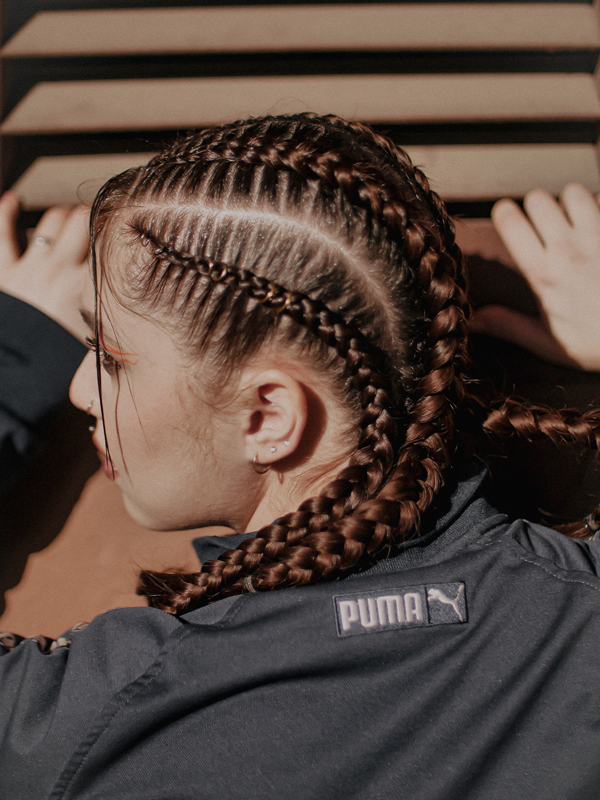

Брейды
Гладкие косы по голове: от двух (боксерские косы) до множества мелких. Чем больше кос, тем они мельче и тем дольше сохраняется опрятный вид, а при малом числе кос быстрее проступают свои короткие волоски.
Плетём из своих волос или с канекалоном. Материал можно взять в цвет волос или любой другой: он добавляет объём и продлевает срок носки. Отличный способ попробовать новое без радикальных перемен.